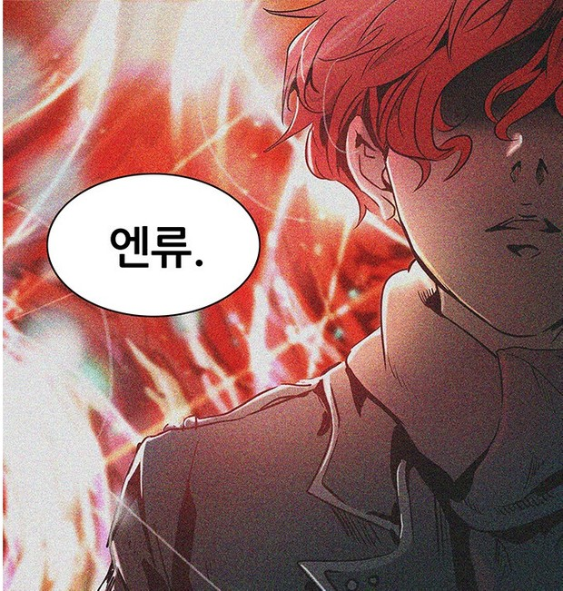

랭크 2위의 비선별인원으로 탑 최강의 존재입니다. 어느 날 갑자기 자하드 궁에 침입하여 절대적인 힘을 자신하던 자하드의 수많은 인재들을 혼자서 도륙내고 사라진 인물이라고 하죠. 모든 방어선을 뚫어내고 자하드의 앞까지 갔지만 무슨 이유에서인지 자하드는 건드리지 않았습니다. 그 후에도 별다른 활약을 하지 않고 사라져버린 수수께끼의 인물입니다. 이 때문에 랭킹 1위에 넣어야 하는가는 논란이 많았지만 관리자를 죽이는 일보다 자하드 왕실을 단일돌파한 것이 더 대단한 일이라 평가했는지 랭킹 1위가 되었습니다. 탑에서 전혀 볼 수 없는 전투스타일과 무기를 사용했으며 제대로 된 목격자도 없습니다. 하 유리 자하드는 그를 목격했는데 그를 더러운 녀석이었다는 말 말고는 표현하지 않고 있다고 합니다. 펜타미넘의 등장으로 탑의 지배층은 비선별인원들과 상식을 벗어난 힘을 가진 인물들을 경계하기 시작했고 이를 위해서 시험의 층을 만들어서 위험이 되는 사람들을 미리 걸러내고 있습니다.